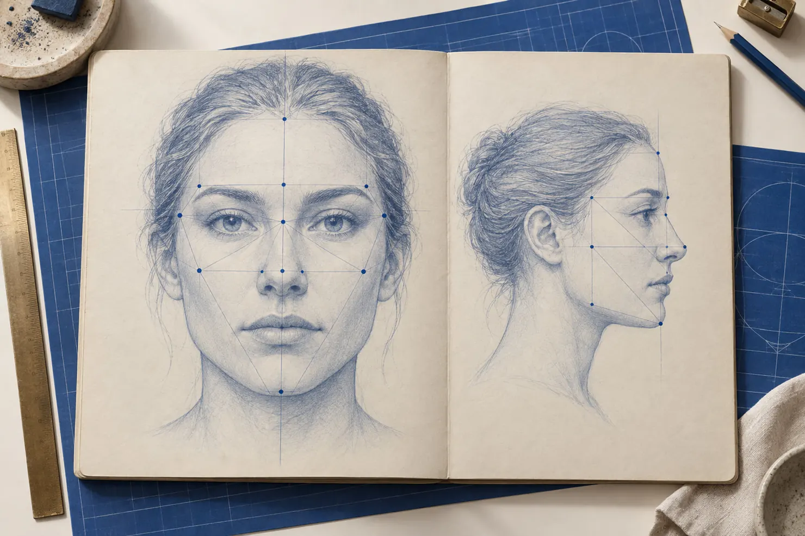

O rosto conta a história que a pessoa nunca te contou.
Na metodologia do Raio-X Humano, o rosto é lido por regiões: o lado direito revela a relação com a referência paterna, o lado esquerdo com a referência materna, e a região dos olhos guarda os sinais de peso, ausência e manipulação.
RELATÓRIO DE ANÁLISEPESO ........................ amassa.AUSÊNCIA .................... afunda.MANIPULAÇÃO ................. estica.
Não é olhar para alguém e “sentir alguma coisa”. É saber onde olhar e o que comparar.
Tratar só o fruto faz a dor ir embora e voltar. O Bruno criou a Teoria das 4 Funções Ocultas do Sintoma para mostrar qual papel cada dor está cumprindo.
FICHA 01ProteçãoO corpo cria uma barreira.Alergias, rinite, psoríase
FICHA 02EvitaçãoO corpo foge do que não pode encarar.Enxaqueca, pânico, zumbido, ansiedade
FICHA 03CompensaçãoO corpo tenta preencher um vazio.Compulsões alimentares e vícios
FICHA 04SuporteO corpo carrega um peso que não é dele.Gastrite crônica, bruxismo, dores articulares, hipertensão
Quando você descobre a função, você encontra a raiz. E quando encontra a raiz, a sessão deixa de ser tentativa.
SIMONE“Eu achava que era só mais um charlatão da internet.”Cética, mandou uma foto durante a live. Só de abrir a imagem, o Bruno falou dos traumas dela e, em menos de um minuto, apontou o que ela levou anos para descobrir: coluna, insônia, psoríase e prisão de ventre.
GISELE VELOSO · TERAPEUTA“Já investi mais de R$ 100 mil em cursos. O Bruno foi diferente de tudo.”Conheceu o Bruno pelas lives e entrou no Workshop Raio-X. Hoje olha para pacientes e pessoas de outra forma: é mais assertiva para se relacionar, contratar e até se afastar de quem não faz bem.
FABIANA SANTOS · 1ª TURMA“Nem eu sabia que tudo aquilo estava internalizado dentro de mim.”Passou pela ferramenta de dessignificação e viu mudar o ambiente de casa e a relação com as clientes. Depois, dessignificou outros traumas sozinha e transformou a visão de si como mulher, mãe, esposa e empreendedora.
CÁTIA · 58 ANOS“Faz três noites que eu durmo sem remédio, sem nada.”Mentorada do Bruno, conta que vivia com a cabeça barulhenta, sempre nervosa e irritada. Hoje dorme tranquila e sente que a vida ganhou muito mais qualidade.Qualquer mudança de medicação deve ser feita com acompanhamento médico.
BETY AZEVEDO · INFOPRODUTORA“É muito mais que uma mentoria, é muito mais que um curso.”Quer atuar como terapeuta para ajudar mães que passaram por luto e perdas. Diz que o método ensina a ler a pessoa e o trauma, e que hoje se sente preparada para enxergar problemas nos próprios filhos.
BRUNA · TERAPEUTA“Descobri traumas que eu nem sabia que existiam.”Entrou buscando técnicas para os pacientes e percebeu que precisava se conhecer primeiro. Hoje diz estar se transformando e animada para aplicar tudo no consultório.
CLÁUDIA“Eu não paro de olhar para os rostos das pessoas.”Trabalha com proteção contra o abuso e conta que, depois da mentoria, passou a observar o rosto e o corpo de crianças e adultos com outro olhar.
ALUNA DA MENTORIA“Fiz várias terapias e nenhuma fez o que a mentoria fez em tão pouco tempo.”Conta que recuperou uma confiança que não tinha há muito tempo, e que o método não só faz enxergar: faz agir diferente.
EDIVANIA“Tem mudado muito a minha forma de me analisar e de olhar o próximo.”Chega a tirar fotos de si mesma para se analisar e já reconheceu sinais de ausência de pai e mãe e de rigidez que quer mudar.
JOICE MAGALHÃES · ANALISTA CORPORAL“Esses protocolos me ajudaram a ter mais confiança.”De Nova Iguaçu (RJ). Com os protocolos de rastreio e dessignificação, entendeu onde estavam as dores dos seus traços principais e hoje já grava vídeos e publica conteúdo.
MARCELA“Isso melhorou a minha casa absurdamente.”Ganhou o curso do marido e começou aplicando em casa, com os filhos e no casamento. Hoje ajuda amigos e decidiu mudar de profissão para se tornar terapeuta.
MARIANA MARTINS“Meus bloqueios não eram sobre quem eu sou, mas sobre quem eu pensei que era.”Em cerca de quatro semanas, ganhou clareza de metas, criou um projeto novo e está estruturando um portfólio diferente.
PATRÍCIA ALVES · TERAPEUTA HOLÍSTICA“No meio do processo, descobri que quem precisava de ajuda era eu mesma.”Gerente comercial de dia e terapeuta à noite, entrou para agregar valor aos atendimentos e acabou sendo ajudada como pessoa.
RENATA“Eu achava que já sabia muito.”Achava que já tinha ressignificado traumas do passado. Com a dessignificação, percebeu que ainda havia o que trabalhar e está vivendo esse processo.
ROSIELE · TÉCNICA DE ENFERMAGEM“A leveza e a clareza com que o Bruno explica é algo inexplicável.”De Belém (PA), está em transição de carreira. Diz que a mentoria triplicou o conhecimento que já vinha adquirindo e revelou causas-raiz da própria história.
TATIANA“Enxergar esses padrões está sendo muito libertador.”De Ribeirão Preto (SP). Reconheceu a dependência emocional da mãe e a repetição da história dela, o que a ajudou a entender o próprio divórcio. Hoje se sente mais forte e segura.
VANDA RAMOS · TERAPEUTA“Essa aula me destravou.”Tinha uma mentoria pronta na cabeça, mas não sabia como começar a vender. Uma aula da mentoria a destravou e ela já vai começar as vendas.
Funciona para quem quer entender pessoas, a começar por si mesmo.
Para você mesmoEntenda de onde vêm as suas dores, os seus padrões e as suas escolhas, e pare de tratar só o que aparece.
Terapeutas e profissionais de saúdeUm diferencial no consultório: chegar à raiz antes de o paciente terminar de contar a história.
Quem quer uma nova profissãoMuita gente tem se tornado terapeuta pelo método do Raio-X e atende de casa.
Mães, pais, líderes e empresáriosEntenda filhos, equipe, sócios e clientes antes da primeira conversa.
CASO Nº 06 · COMO FUNCIONA O WORKSHOP
Veja exatamente o que você aprende em cada uma das 2 noites.

DOSSIÊ 01 · PRÓXIMA TERÇA ÀS 20HO rosto conta a história que a pessoa não contaVocê vai aprender a ler o rosto por regiões (lado materno, lado paterno e região dos olhos) e a reconhecer as marcas de peso, ausência e manipulação. Vai conhecer os 5 traços de caráter e ver análises ao vivo de rostos reais.
DOSSIÊ 02 · PRÓXIMA QUARTA ÀS 20HA raiz emocional por trás do sintomaVocê vai conhecer as 4 Funções Ocultas do Sintoma, entender a diferença entre trauma por impacto e trauma por repetição e ver como uma sessão é conduzida para ir direto à raiz, já no primeiro atendimento.
Bônus ao vivo: análise do seu rosto pelo Bruno (selecionados no chat)
Tudo o que funcionou em mais de 9.000 atendimentos, entregue em 2 noites.
Como ler o rosto, encontrar a função do sintoma e conduzir a sessão até a raiz. O ingresso é acessível porque quero que você saia daqui enxergando pessoas de um jeito que não vai conseguir desver.
Meu nome é Bruno Simplício. Sou psicanalista, analista comportamental e corporal, especialista em leitura fria e em rastreio de traumas, com formação em microexpressões faciais.
São mais de 9.000 atendimentos. Neles, percebi duas coisas que se repetem: as pessoas passam anos tratando o sintoma sem nunca chegar à raiz, e terapeutas bem formados, com muita teoria, ainda não sabem por onde começar um atendimento.
Foi para resolver isso que criei a Teoria das 4 Funções Ocultas do Sintoma e o Protocolo de Dessignificação, hoje usados por terapeutas no Brasil e no mundo.
O rosto conta a história que a pessoa nunca te contou.
onde olhar?
Na metodologia do Raio-X Humano, o rosto é lido por regiões: o lado direito revela a relação com a referência paterna, o lado esquerdo com a referência materna, e a região dos olhos guarda os sinais de peso, ausência e manipulação.
RELATÓRIO DE ANÁLISEPESO ........... amassa.AUSÊNCIA ....... afunda.MANIPULAÇÃO .... estica.
Não é olhar para alguém e “sentir alguma coisa”. É saber onde olhar e o que comparar.
Tratar só o fruto faz a dor ir embora e voltar. O Bruno criou a Teoria das 4 Funções Ocultas do Sintoma para mostrar qual papel cada dor está cumprindo.
FICHA 01ProteçãoO corpo cria uma barreira. Alergias, rinite, psoríase.
FICHA 02EvitaçãoO corpo foge do que não pode encarar. Enxaqueca, pânico, zumbido, ansiedade.
FICHA 03CompensaçãoO corpo tenta preencher um vazio. Compulsões alimentares e vícios.
FICHA 04SuporteO corpo carrega um peso que não é dele. Gastrite crônica, bruxismo, dores articulares, hipertensão.
Quando você descobre a função, você encontra a raiz. E quando encontra a raiz, a sessão deixa de ser tentativa.
SIMONE“Eu achava que era só mais um charlatão da internet.”Cética, mandou uma foto durante a live. Só de abrir a imagem, o Bruno falou dos traumas dela e, em menos de um minuto, apontou o que ela levou anos para descobrir: coluna, insônia, psoríase e prisão de ventre.
GISELE VELOSO · TERAPEUTA“Já investi mais de R$ 100 mil em cursos. O Bruno foi diferente de tudo.”Conheceu o Bruno pelas lives e entrou no Workshop Raio-X. Hoje olha para pacientes e pessoas de outra forma: é mais assertiva para se relacionar, contratar e até se afastar de quem não faz bem.
FABIANA SANTOS · 1ª TURMA“Nem eu sabia que tudo aquilo estava internalizado dentro de mim.”Passou pela ferramenta de dessignificação e viu mudar o ambiente de casa e a relação com as clientes. Depois, dessignificou outros traumas sozinha e transformou a visão de si como mulher, mãe, esposa e empreendedora.
CÁTIA · 58 ANOS“Faz três noites que eu durmo sem remédio, sem nada.”Mentorada do Bruno, conta que vivia com a cabeça barulhenta, sempre nervosa e irritada. Hoje dorme tranquila e sente que a vida ganhou muito mais qualidade.Qualquer mudança de medicação deve ser feita com acompanhamento médico.
BETY AZEVEDO · INFOPRODUTORA“É muito mais que uma mentoria, é muito mais que um curso.”Quer atuar como terapeuta para ajudar mães que passaram por luto e perdas. Diz que o método ensina a ler a pessoa e o trauma, e que hoje se sente preparada para enxergar problemas nos próprios filhos.
BRUNA · TERAPEUTA“Descobri traumas que eu nem sabia que existiam.”Entrou buscando técnicas para os pacientes e percebeu que precisava se conhecer primeiro. Hoje diz estar se transformando e animada para aplicar tudo no consultório.
CLÁUDIA“Eu não paro de olhar para os rostos das pessoas.”Trabalha com proteção contra o abuso e conta que, depois da mentoria, passou a observar o rosto e o corpo de crianças e adultos com outro olhar.
ALUNA DA MENTORIA“Fiz várias terapias e nenhuma fez o que a mentoria fez em tão pouco tempo.”Conta que recuperou uma confiança que não tinha há muito tempo, e que o método não só faz enxergar: faz agir diferente.
EDIVANIA“Tem mudado muito a minha forma de me analisar e de olhar o próximo.”Chega a tirar fotos de si mesma para se analisar e já reconheceu sinais de ausência de pai e mãe e de rigidez que quer mudar.
JOICE MAGALHÃES · ANALISTA CORPORAL“Esses protocolos me ajudaram a ter mais confiança.”De Nova Iguaçu (RJ). Com os protocolos de rastreio e dessignificação, entendeu onde estavam as dores dos seus traços principais e hoje já grava vídeos e publica conteúdo.
MARCELA“Isso melhorou a minha casa absurdamente.”Ganhou o curso do marido e começou aplicando em casa, com os filhos e no casamento. Hoje ajuda amigos e decidiu mudar de profissão para se tornar terapeuta.
MARIANA MARTINS“Meus bloqueios não eram sobre quem eu sou, mas sobre quem eu pensei que era.”Em cerca de quatro semanas, ganhou clareza de metas, criou um projeto novo e está estruturando um portfólio diferente.
PATRÍCIA ALVES · TERAPEUTA HOLÍSTICA“No meio do processo, descobri que quem precisava de ajuda era eu mesma.”Gerente comercial de dia e terapeuta à noite, entrou para agregar valor aos atendimentos e acabou sendo ajudada como pessoa.
RENATA“Eu achava que já sabia muito.”Achava que já tinha ressignificado traumas do passado. Com a dessignificação, percebeu que ainda havia o que trabalhar e está vivendo esse processo.
ROSIELE · TÉCNICA DE ENFERMAGEM“A leveza e a clareza com que o Bruno explica é algo inexplicável.”De Belém (PA), está em transição de carreira. Diz que a mentoria triplicou o conhecimento que já vinha adquirindo e revelou causas-raiz da própria história.
TATIANA“Enxergar esses padrões está sendo muito libertador.”De Ribeirão Preto (SP). Reconheceu a dependência emocional da mãe e a repetição da história dela, o que a ajudou a entender o próprio divórcio. Hoje se sente mais forte e segura.
VANDA RAMOS · TERAPEUTA“Essa aula me destravou.”Tinha uma mentoria pronta na cabeça, mas não sabia como começar a vender. Uma aula da mentoria a destravou e ela já vai começar as vendas.
Para você mesmoEntenda de onde vêm as suas dores, os seus padrões e as suas escolhas, e pare de tratar só o que aparece.
Terapeutas e profissionais de saúdeUm diferencial no consultório: chegar à raiz antes de o paciente terminar de contar a história.
Quem quer uma nova profissãoMuita gente tem se tornado terapeuta pelo método do Raio-X e atende de casa.
Mães, pais, líderes e empresáriosEntenda filhos, equipe, sócios e clientes antes da primeira conversa.
CASO Nº 06 · COMO FUNCIONA
Veja exatamente o que você aprende em cada uma das 2 noites.
DOSSIÊ 01 · PRÓXIMA TERÇA ÀS 20HO rosto conta a história que a pessoa não contaVocê vai aprender a ler o rosto por regiões (lado materno, lado paterno e região dos olhos) e a reconhecer as marcas de peso, ausência e manipulação. Vai conhecer os 5 traços de caráter e ver análises ao vivo de rostos reais.
DOSSIÊ 02 · PRÓXIMA QUARTA ÀS 20HA raiz emocional por trás do sintomaVocê vai conhecer as 4 Funções Ocultas do Sintoma, entender a diferença entre trauma por impacto e trauma por repetição e ver como uma sessão é conduzida para ir direto à raiz, já no primeiro atendimento.
Bônus ao vivo: análise do seu rosto pelo Bruno (selecionados no chat)
Tudo o que funcionou em mais de 9.000 atendimentos, entregue em 2 noites.
Como ler o rosto, encontrar a função do sintoma e conduzir a sessão até a raiz. O ingresso é acessível porque quero que você saia daqui enxergando pessoas de um jeito que não vai conseguir desver.
Meu nome é Bruno Simplício. Sou psicanalista, analista comportamental e corporal, especialista em leitura fria e em rastreio de traumas, com formação em microexpressões faciais.
São mais de 9.000 atendimentos. Neles, percebi duas coisas que se repetem: as pessoas passam anos tratando o sintoma sem nunca chegar à raiz, e terapeutas bem formados, com muita teoria, ainda não sabem por onde começar um atendimento.
Foi para resolver isso que criei a Teoria das 4 Funções Ocultas do Sintoma e o Protocolo de Dessignificação, hoje usados por terapeutas no Brasil e no mundo.